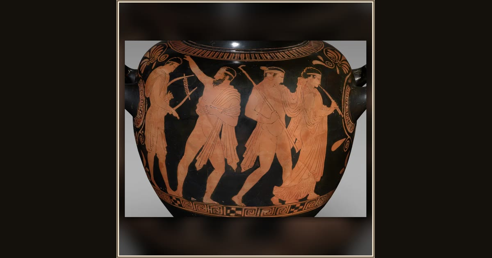

Red-Figure Stamnos (Mixing/Storage Vessel): Komos (Musicians and Revelers)
Kleophon Painter (Greek, Attic, active c. 440–410 BCE) · c. 435–425 BCE · cma
Four revelers, one playing pipes, move across a ceramic vessel; Aristotle says friends spend time together in favored pursuits, including drinking (9.12). Explore its place in Aristotle's Nicomachean Ethics, Book IX, section 12.